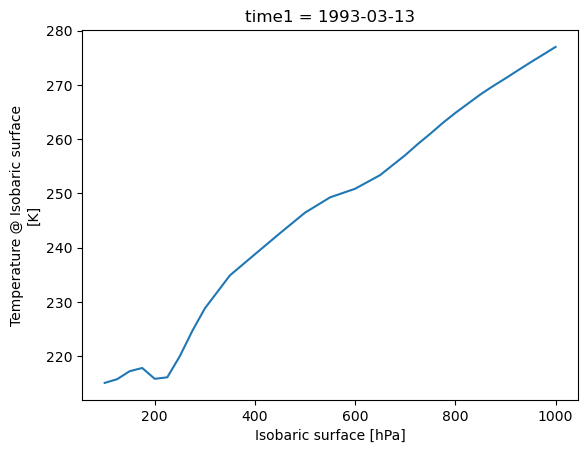
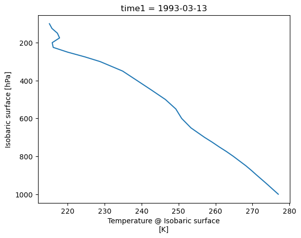
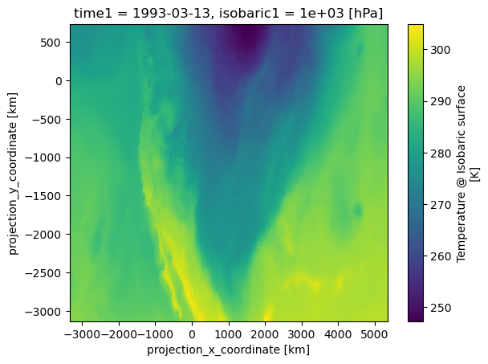

Demo: Introduction to Xarray#
source: This tutorial is part of Project Pythia
xarray-intro.ipynb download link
Overview#
This notebook will introduce the basics of gridded, labeled data with Xarray. Since Xarray introduces additional abstractions on top of plain arrays of data, our goal is to show why these abstractions are useful and how they frequently lead to simpler, more robust code.
We’ll cover these topics:
Create a
DataArray, one of the core object types in XarrayUnderstand how to use named coordinates and metadata in a
DataArrayCombine individual
DataArraysinto aDataset, the other core object type in XarraySubset, slice, and interpolate the data using named coordinates
Open netCDF data using XArray
Basic subsetting and aggregation of a
DatasetBrief introduction to plotting with Xarray
Prerequisites#
Concepts |
Importance |
Notes |
|---|---|---|
NumPy Basics |
Necessary |
|
Intermediate NumPy |
Helpful |
Familiarity with indexing and slicing arrays |
NumPy Broadcasting |
Helpful |
Familiar with array arithmetic and broadcasting |
Introduction to Pandas |
Helpful |
Familiarity with labeled data |
Datetime |
Helpful |
Familiarity with time formats and the |
Understanding of NetCDF |
Helpful |
Familiarity with metadata structure |
Time to learn: 40 minutes
Imports#
Simmilar to numpy, np; pandas, pd; you may often encounter xarray imported within a shortened namespace as xr. pythia_datasets provides example data for us to work with.
from datetime import timedelta
import numpy as np
import pandas as pd
import xarray as xr
from pythia_datasets import DATASETS
/Users/phil/mini313/miniconda3/envs/a405/lib/python3.14/site-packages/pythia_datasets/__init__.py:4: UserWarning: pkg_resources is deprecated as an API. See https://setuptools.pypa.io/en/latest/pkg_resources.html. The pkg_resources package is slated for removal as early as 2025-11-30. Refrain from using this package or pin to Setuptools<81.
from pkg_resources import DistributionNotFound, get_distribution
Introducing the DataArray and Dataset#
Xarray expands on the capabilities on NumPy arrays, providing a lot of streamlined data manipulation. It is similar in that respect to Pandas, but whereas Pandas excels at working with tabular data, Xarray is focused on N-dimensional arrays of data (i.e. grids). Its interface is based largely on the netCDF data model (variables, attributes, and dimensions), but it goes beyond the traditional netCDF interfaces to provide functionality similar to netCDF-java’s Common Data Model (CDM).
Creation of a DataArray object#
The DataArray is one of the basic building blocks of Xarray (see docs here). It provides a numpy.ndarray-like object that expands to provide two critical pieces of functionality:
Coordinate names and values are stored with the data, making slicing and indexing much more powerful
It has a built-in container for attributes
Here we’ll initialize a DataArray object by wrapping a plain NumPy array, and explore a few of its properties.
Generate a random numpy array#
For our first example, we’ll just create a random array of “temperature” data in units of Kelvin:
data = 283 + 5 * np.random.randn(5, 3, 4)
data
array([[[278.86493382, 280.93445304, 288.03939832, 287.66842058],
[288.54391896, 282.01888238, 288.41862407, 284.80941923],
[273.68941844, 279.53708039, 279.26016502, 282.61648956]],
[[284.71275 , 277.73300638, 285.32188162, 296.71545624],
[280.39459823, 282.01052681, 281.84933703, 278.48754619],
[269.91844139, 291.0217926 , 282.5269963 , 272.61924189]],
[[284.53092324, 280.97963901, 284.97063773, 290.92491619],
[277.98975027, 292.81604434, 283.80985793, 279.82316854],
[279.60004907, 289.84521131, 277.44951491, 283.45427182]],
[[283.98887283, 289.51500741, 276.4940363 , 281.2872866 ],
[277.59899518, 273.45069935, 277.12632165, 276.22633919],
[279.27939727, 282.54122558, 292.68262062, 282.05458208]],
[[274.40708117, 279.40542595, 280.77215845, 281.07738005],
[280.64951402, 283.38398332, 281.97011603, 277.4696386 ],
[279.53752979, 286.25363055, 280.23348816, 283.8224902 ]]])
Wrap the array: first attempt#
Now we create a basic DataArray just by passing our plain data as input:
temp = xr.DataArray(data)
temp
<xarray.DataArray (dim_0: 5, dim_1: 3, dim_2: 4)> Size: 480B
array([[[278.86493382, 280.93445304, 288.03939832, 287.66842058],
[288.54391896, 282.01888238, 288.41862407, 284.80941923],
[273.68941844, 279.53708039, 279.26016502, 282.61648956]],
[[284.71275 , 277.73300638, 285.32188162, 296.71545624],
[280.39459823, 282.01052681, 281.84933703, 278.48754619],
[269.91844139, 291.0217926 , 282.5269963 , 272.61924189]],
[[284.53092324, 280.97963901, 284.97063773, 290.92491619],
[277.98975027, 292.81604434, 283.80985793, 279.82316854],
[279.60004907, 289.84521131, 277.44951491, 283.45427182]],
[[283.98887283, 289.51500741, 276.4940363 , 281.2872866 ],
[277.59899518, 273.45069935, 277.12632165, 276.22633919],
[279.27939727, 282.54122558, 292.68262062, 282.05458208]],
[[274.40708117, 279.40542595, 280.77215845, 281.07738005],
[280.64951402, 283.38398332, 281.97011603, 277.4696386 ],
[279.53752979, 286.25363055, 280.23348816, 283.8224902 ]]])
Dimensions without coordinates: dim_0, dim_1, dim_2Note two things:
Xarray generates some basic dimension names for us (
dim_0,dim_1,dim_2). We’ll improve this with better names in the next example.Wrapping the numpy array in a
DataArraygives us a rich display in the notebook! (Try clicking the array symbol to expand or collapse the view)
Assign dimension names#
Much of the power of Xarray comes from making use of named dimensions. So let’s add some more useful names! We can do that by passing an ordered list of names using the keyword argument dims:
temp = xr.DataArray(data, dims=['time', 'lat', 'lon'])
temp
<xarray.DataArray (time: 5, lat: 3, lon: 4)> Size: 480B
array([[[278.86493382, 280.93445304, 288.03939832, 287.66842058],
[288.54391896, 282.01888238, 288.41862407, 284.80941923],
[273.68941844, 279.53708039, 279.26016502, 282.61648956]],
[[284.71275 , 277.73300638, 285.32188162, 296.71545624],
[280.39459823, 282.01052681, 281.84933703, 278.48754619],
[269.91844139, 291.0217926 , 282.5269963 , 272.61924189]],
[[284.53092324, 280.97963901, 284.97063773, 290.92491619],
[277.98975027, 292.81604434, 283.80985793, 279.82316854],
[279.60004907, 289.84521131, 277.44951491, 283.45427182]],
[[283.98887283, 289.51500741, 276.4940363 , 281.2872866 ],
[277.59899518, 273.45069935, 277.12632165, 276.22633919],
[279.27939727, 282.54122558, 292.68262062, 282.05458208]],
[[274.40708117, 279.40542595, 280.77215845, 281.07738005],
[280.64951402, 283.38398332, 281.97011603, 277.4696386 ],
[279.53752979, 286.25363055, 280.23348816, 283.8224902 ]]])
Dimensions without coordinates: time, lat, lonThis is already improved upon from a NumPy array, because we have names for each of the dimensions (or axes in NumPy parlance). Even better, we can take arrays representing the values for the coordinates for each of these dimensions and associate them with the data when we create the DataArray. We’ll see this in the next example.
Create a DataArray with named Coordinates#
Make time and space coordinates#
Here we will use Pandas to create an array of datetime data, which we will then use to create a DataArray with a named coordinate time.
times = pd.date_range('2018-01-01', periods=5)
times
DatetimeIndex(['2018-01-01', '2018-01-02', '2018-01-03', '2018-01-04',
'2018-01-05'],
dtype='datetime64[ns]', freq='D')
We’ll also create arrays to represent sample longitude and latitude:
lons = np.linspace(-120, -60, 4)
lats = np.linspace(25, 55, 3)
Initialize the DataArray with complete coordinate info#
When we create the DataArray instance, we pass in the arrays we just created:
temp = xr.DataArray(data, coords=[times, lats, lons], dims=['time', 'lat', 'lon'])
temp
<xarray.DataArray (time: 5, lat: 3, lon: 4)> Size: 480B
array([[[278.86493382, 280.93445304, 288.03939832, 287.66842058],
[288.54391896, 282.01888238, 288.41862407, 284.80941923],
[273.68941844, 279.53708039, 279.26016502, 282.61648956]],
[[284.71275 , 277.73300638, 285.32188162, 296.71545624],
[280.39459823, 282.01052681, 281.84933703, 278.48754619],
[269.91844139, 291.0217926 , 282.5269963 , 272.61924189]],
[[284.53092324, 280.97963901, 284.97063773, 290.92491619],
[277.98975027, 292.81604434, 283.80985793, 279.82316854],
[279.60004907, 289.84521131, 277.44951491, 283.45427182]],
[[283.98887283, 289.51500741, 276.4940363 , 281.2872866 ],
[277.59899518, 273.45069935, 277.12632165, 276.22633919],
[279.27939727, 282.54122558, 292.68262062, 282.05458208]],
[[274.40708117, 279.40542595, 280.77215845, 281.07738005],
[280.64951402, 283.38398332, 281.97011603, 277.4696386 ],
[279.53752979, 286.25363055, 280.23348816, 283.8224902 ]]])
Coordinates:
* time (time) datetime64[ns] 40B 2018-01-01 2018-01-02 ... 2018-01-05
* lat (lat) float64 24B 25.0 40.0 55.0
* lon (lon) float64 32B -120.0 -100.0 -80.0 -60.0Set useful attributes#
…and while we’re at it, we can also set some attribute metadata:
temp.attrs['units'] = 'kelvin'
temp.attrs['standard_name'] = 'air_temperature'
temp
<xarray.DataArray (time: 5, lat: 3, lon: 4)> Size: 480B
array([[[278.86493382, 280.93445304, 288.03939832, 287.66842058],
[288.54391896, 282.01888238, 288.41862407, 284.80941923],
[273.68941844, 279.53708039, 279.26016502, 282.61648956]],
[[284.71275 , 277.73300638, 285.32188162, 296.71545624],
[280.39459823, 282.01052681, 281.84933703, 278.48754619],
[269.91844139, 291.0217926 , 282.5269963 , 272.61924189]],
[[284.53092324, 280.97963901, 284.97063773, 290.92491619],
[277.98975027, 292.81604434, 283.80985793, 279.82316854],
[279.60004907, 289.84521131, 277.44951491, 283.45427182]],
[[283.98887283, 289.51500741, 276.4940363 , 281.2872866 ],
[277.59899518, 273.45069935, 277.12632165, 276.22633919],
[279.27939727, 282.54122558, 292.68262062, 282.05458208]],
[[274.40708117, 279.40542595, 280.77215845, 281.07738005],
[280.64951402, 283.38398332, 281.97011603, 277.4696386 ],
[279.53752979, 286.25363055, 280.23348816, 283.8224902 ]]])
Coordinates:
* time (time) datetime64[ns] 40B 2018-01-01 2018-01-02 ... 2018-01-05
* lat (lat) float64 24B 25.0 40.0 55.0
* lon (lon) float64 32B -120.0 -100.0 -80.0 -60.0
Attributes:
units: kelvin
standard_name: air_temperatureAttributes are not preserved by default!#
Notice what happens if we perform a mathematical operaton with the DataArray: the coordinate values persist, but the attributes are lost. This is done because it is very challenging to know if the attribute metadata is still correct or appropriate after arbitrary arithmetic operations.
To illustrate this, we’ll do a simple unit conversion from Kelvin to Celsius:
temp_in_celsius = temp - 273.15
temp_in_celsius
<xarray.DataArray (time: 5, lat: 3, lon: 4)> Size: 480B
array([[[ 5.71493382, 7.78445304, 14.88939832, 14.51842058],
[15.39391896, 8.86888238, 15.26862407, 11.65941923],
[ 0.53941844, 6.38708039, 6.11016502, 9.46648956]],
[[11.56275 , 4.58300638, 12.17188162, 23.56545624],
[ 7.24459823, 8.86052681, 8.69933703, 5.33754619],
[-3.23155861, 17.8717926 , 9.3769963 , -0.53075811]],
[[11.38092324, 7.82963901, 11.82063773, 17.77491619],
[ 4.83975027, 19.66604434, 10.65985793, 6.67316854],
[ 6.45004907, 16.69521131, 4.29951491, 10.30427182]],
[[10.83887283, 16.36500741, 3.3440363 , 8.1372866 ],
[ 4.44899518, 0.30069935, 3.97632165, 3.07633919],
[ 6.12939727, 9.39122558, 19.53262062, 8.90458208]],
[[ 1.25708117, 6.25542595, 7.62215845, 7.92738005],
[ 7.49951402, 10.23398332, 8.82011603, 4.3196386 ],
[ 6.38752979, 13.10363055, 7.08348816, 10.6724902 ]]])
Coordinates:
* time (time) datetime64[ns] 40B 2018-01-01 2018-01-02 ... 2018-01-05
* lat (lat) float64 24B 25.0 40.0 55.0
* lon (lon) float64 32B -120.0 -100.0 -80.0 -60.0
Attributes:
units: kelvin
standard_name: air_temperatureFor an in-depth discussion of how Xarray handles metadata, start in the Xarray docs here.
Subsetting and selection by coordinate values#
Much of the power of labeled coordinates comes from the ability to select data based on coordinate names and values, rather than array indices. We’ll explore this briefly here.
NumPy-like selection#
Suppose we want to extract all the spatial data for one single date: January 2, 2018. It’s possible to achieve that with NumPy-like index selection:
indexed_selection = temp[1, :, :] # Index 1 along axis 0 is the time slice we want...
indexed_selection
<xarray.DataArray (lat: 3, lon: 4)> Size: 96B
array([[284.71275 , 277.73300638, 285.32188162, 296.71545624],
[280.39459823, 282.01052681, 281.84933703, 278.48754619],
[269.91844139, 291.0217926 , 282.5269963 , 272.61924189]])
Coordinates:
* lat (lat) float64 24B 25.0 40.0 55.0
* lon (lon) float64 32B -120.0 -100.0 -80.0 -60.0
time datetime64[ns] 8B 2018-01-02
Attributes:
units: kelvin
standard_name: air_temperatureHOWEVER, notice that this requires us (the user / programmer) to have detailed knowledge of the order of the axes and the meaning of the indices along those axes!
Named coordinates free us from this burden…
Selecting with .sel()#
We can instead select data based on coordinate values using the .sel() method, which takes one or more named coordinate(s) as keyword argument:
named_selection = temp.sel(time='2018-01-02')
named_selection
<xarray.DataArray (lat: 3, lon: 4)> Size: 96B
array([[284.71275 , 277.73300638, 285.32188162, 296.71545624],
[280.39459823, 282.01052681, 281.84933703, 278.48754619],
[269.91844139, 291.0217926 , 282.5269963 , 272.61924189]])
Coordinates:
* lat (lat) float64 24B 25.0 40.0 55.0
* lon (lon) float64 32B -120.0 -100.0 -80.0 -60.0
time datetime64[ns] 8B 2018-01-02
Attributes:
units: kelvin
standard_name: air_temperatureWe got the same result, but
we didn’t have to know anything about how the array was created or stored
our code is agnostic about how many dimensions we are dealing with
the intended meaning of our code is much clearer!
Approximate selection and interpolation#
With time and space data, we frequently want to sample “near” the coordinate points in our dataset. Here are a few simple ways to achieve that.
Nearest-neighbor sampling#
Suppose we want to sample the nearest datapoint within 2 days of date 2018-01-07. Since the last day on our time axis is 2018-01-05, this is well-posed.
.sel has the flexibility to perform nearest neighbor sampling, taking an optional tolerance:
temp.sel(time='2018-01-07', method='nearest', tolerance=timedelta(days=2))
<xarray.DataArray (lat: 3, lon: 4)> Size: 96B
array([[274.40708117, 279.40542595, 280.77215845, 281.07738005],
[280.64951402, 283.38398332, 281.97011603, 277.4696386 ],
[279.53752979, 286.25363055, 280.23348816, 283.8224902 ]])
Coordinates:
* lat (lat) float64 24B 25.0 40.0 55.0
* lon (lon) float64 32B -120.0 -100.0 -80.0 -60.0
time datetime64[ns] 8B 2018-01-05
Attributes:
units: kelvin
standard_name: air_temperaturewhere we see that .sel indeed pulled out the data for date 2018-01-05.
Interpolation#
Suppose we want to extract a timeseries for Boulder (40°N, 105°W). Since lon=-105 is not a point on our longitude axis, this requires interpolation between data points.
The .interp() method (see the docs here) works similarly to .sel(). Using .interp(), we can interpolate to any latitude/longitude location:
temp.interp(lon=-105, lat=40)
<xarray.DataArray (time: 5)> Size: 40B
array([283.65014153, 281.60654467, 289.10947083, 274.48777331,
282.700366 ])
Coordinates:
* time (time) datetime64[ns] 40B 2018-01-01 2018-01-02 ... 2018-01-05
lon int64 8B -105
lat int64 8B 40
Attributes:
units: kelvin
standard_name: air_temperatureInfo
Xarray’s interpolation functionality requires the SciPy package!
Slicing along coordinates#
Frequently we want to select a range (or slice) along one or more coordinate(s). We can achieve this by passing a Python slice object to .sel(), as follows:
temp.sel(
time=slice('2018-01-01', '2018-01-03'), lon=slice(-110, -70), lat=slice(25, 45)
)
<xarray.DataArray (time: 3, lat: 2, lon: 2)> Size: 96B
array([[[280.93445304, 288.03939832],
[282.01888238, 288.41862407]],
[[277.73300638, 285.32188162],
[282.01052681, 281.84933703]],
[[280.97963901, 284.97063773],
[292.81604434, 283.80985793]]])
Coordinates:
* time (time) datetime64[ns] 24B 2018-01-01 2018-01-02 2018-01-03
* lat (lat) float64 16B 25.0 40.0
* lon (lon) float64 16B -100.0 -80.0
Attributes:
units: kelvin
standard_name: air_temperatureInfo
The calling sequence for slice always looks like slice(start, stop[, step]), where step is optional.
Notice how the length of each coordinate axis has changed due to our slicing.
One more selection method: .loc#
All of these operations can also be done within square brackets on the .loc attribute of the DataArray:
temp.loc['2018-01-02']
<xarray.DataArray (lat: 3, lon: 4)> Size: 96B
array([[284.71275 , 277.73300638, 285.32188162, 296.71545624],
[280.39459823, 282.01052681, 281.84933703, 278.48754619],
[269.91844139, 291.0217926 , 282.5269963 , 272.61924189]])
Coordinates:
* lat (lat) float64 24B 25.0 40.0 55.0
* lon (lon) float64 32B -120.0 -100.0 -80.0 -60.0
time datetime64[ns] 8B 2018-01-02
Attributes:
units: kelvin
standard_name: air_temperatureThis is sort of in between the NumPy-style selection
temp[1,:,:]
and the fully label-based selection using .sel()
With .loc, we make use of the coordinate values, but lose the ability to specify the names of the various dimensions. Instead, the slicing must be done in the correct order:
temp.loc['2018-01-01':'2018-01-03', 25:45, -110:-70]
<xarray.DataArray (time: 3, lat: 2, lon: 2)> Size: 96B
array([[[280.93445304, 288.03939832],
[282.01888238, 288.41862407]],
[[277.73300638, 285.32188162],
[282.01052681, 281.84933703]],
[[280.97963901, 284.97063773],
[292.81604434, 283.80985793]]])
Coordinates:
* time (time) datetime64[ns] 24B 2018-01-01 2018-01-02 2018-01-03
* lat (lat) float64 16B 25.0 40.0
* lon (lon) float64 16B -100.0 -80.0
Attributes:
units: kelvin
standard_name: air_temperatureOne advantage of using .loc is that we can use NumPy-style slice notation like 25:45, rather than the more verbose slice(25,45). But of course that also works:
temp.loc['2018-01-01':'2018-01-03', slice(25, 45), -110:-70]
<xarray.DataArray (time: 3, lat: 2, lon: 2)> Size: 96B
array([[[280.93445304, 288.03939832],
[282.01888238, 288.41862407]],
[[277.73300638, 285.32188162],
[282.01052681, 281.84933703]],
[[280.97963901, 284.97063773],
[292.81604434, 283.80985793]]])
Coordinates:
* time (time) datetime64[ns] 24B 2018-01-01 2018-01-02 2018-01-03
* lat (lat) float64 16B 25.0 40.0
* lon (lon) float64 16B -100.0 -80.0
Attributes:
units: kelvin
standard_name: air_temperatureWhat doesn’t work is passing the slices in a different order:
# This will generate an error
# temp.loc[-110:-70, 25:45,'2018-01-01':'2018-01-03']
Opening netCDF data#
With its close ties to the netCDF data model, Xarray also supports netCDF as a first-class file format. This means it has easy support for opening netCDF datasets, so long as they conform to some of Xarray’s limitations (such as 1-dimensional coordinates).
Access netCDF data with xr.open_dataset#
Info
Here we’re getting the data from Project Pythia’s custom library of example data, which we already imported above with from pythia_datasets import DATASETS. The DATASETS.fetch() method will automatically download and cache our example data file NARR_19930313_0000.nc locally.
filepath = DATASETS.fetch('NARR_19930313_0000.nc')
Once we have a valid path to a data file that Xarray knows how to read, we can open it like this:
ds = xr.open_dataset(filepath)
ds
<xarray.Dataset> Size: 15MB
Dimensions: (time1: 1, isobaric1: 29, y: 119, x: 268)
Coordinates:
* time1 (time1) datetime64[ns] 8B 1993-03-13
* isobaric1 (isobaric1) float32 116B 100.0 125.0 ... 1e+03
* y (y) float32 476B -3.117e+03 ... 714.1
* x (x) float32 1kB -3.324e+03 ... 5.343e+03
Data variables:
u-component_of_wind_isobaric (time1, isobaric1, y, x) float32 4MB ...
LambertConformal_Projection int32 4B ...
lat (y, x) float64 255kB ...
lon (y, x) float64 255kB ...
Geopotential_height_isobaric (time1, isobaric1, y, x) float32 4MB ...
v-component_of_wind_isobaric (time1, isobaric1, y, x) float32 4MB ...
Temperature_isobaric (time1, isobaric1, y, x) float32 4MB ...
Attributes:
Originating_or_generating_Center: US National Weather Service, Nation...
Originating_or_generating_Subcenter: North American Regional Reanalysis ...
GRIB_table_version: 0,131
Generating_process_or_model: North American Regional Reanalysis ...
Conventions: CF-1.6
history: Read using CDM IOSP GribCollection v3
featureType: GRID
History: Translated to CF-1.0 Conventions by...
geospatial_lat_min: 10.753308882144761
geospatial_lat_max: 46.8308828962289
geospatial_lon_min: -153.88242040519995
geospatial_lon_max: -42.666108129242815Subsetting the Dataset#
Our call to xr.open_dataset() above returned a Dataset object that we’ve decided to call ds. We can then pull out individual fields:
ds.isobaric1
<xarray.DataArray 'isobaric1' (isobaric1: 29)> Size: 116B
array([ 100., 125., 150., 175., 200., 225., 250., 275., 300., 350.,
400., 450., 500., 550., 600., 650., 700., 725., 750., 775.,
800., 825., 850., 875., 900., 925., 950., 975., 1000.],
dtype=float32)
Coordinates:
* isobaric1 (isobaric1) float32 116B 100.0 125.0 150.0 ... 950.0 975.0 1e+03
Attributes:
units: hPa
long_name: Isobaric surface
positive: down
Grib_level_type: 100
_CoordinateAxisType: Pressure
_CoordinateZisPositive: down(recall that we can also use dictionary syntax like ds['isobaric1'] to do the same thing)
Datasets also support much of the same subsetting operations as DataArray, but will perform the operation on all data:
ds_1000 = ds.sel(isobaric1=1000.0)
ds_1000
<xarray.Dataset> Size: 1MB
Dimensions: (time1: 1, y: 119, x: 268)
Coordinates:
* time1 (time1) datetime64[ns] 8B 1993-03-13
* y (y) float32 476B -3.117e+03 ... 714.1
* x (x) float32 1kB -3.324e+03 ... 5.343e+03
isobaric1 float32 4B 1e+03
Data variables:
u-component_of_wind_isobaric (time1, y, x) float32 128kB ...
LambertConformal_Projection int32 4B ...
lat (y, x) float64 255kB ...
lon (y, x) float64 255kB ...
Geopotential_height_isobaric (time1, y, x) float32 128kB ...
v-component_of_wind_isobaric (time1, y, x) float32 128kB ...
Temperature_isobaric (time1, y, x) float32 128kB ...
Attributes:
Originating_or_generating_Center: US National Weather Service, Nation...
Originating_or_generating_Subcenter: North American Regional Reanalysis ...
GRIB_table_version: 0,131
Generating_process_or_model: North American Regional Reanalysis ...
Conventions: CF-1.6
history: Read using CDM IOSP GribCollection v3
featureType: GRID
History: Translated to CF-1.0 Conventions by...
geospatial_lat_min: 10.753308882144761
geospatial_lat_max: 46.8308828962289
geospatial_lon_min: -153.88242040519995
geospatial_lon_max: -42.666108129242815And further subsetting to a single DataArray:
ds_1000.Temperature_isobaric
<xarray.DataArray 'Temperature_isobaric' (time1: 1, y: 119, x: 268)> Size: 128kB
[31892 values with dtype=float32]
Coordinates:
* time1 (time1) datetime64[ns] 8B 1993-03-13
* y (y) float32 476B -3.117e+03 -3.084e+03 -3.052e+03 ... 681.6 714.1
* x (x) float32 1kB -3.324e+03 -3.292e+03 ... 5.311e+03 5.343e+03
isobaric1 float32 4B 1e+03
Attributes:
long_name: Temperature @ Isobaric surface
units: K
description: Temperature
grid_mapping: LambertConformal_Projection
Grib_Variable_Id: VAR_7-15-131-11_L100
Grib1_Center: 7
Grib1_Subcenter: 15
Grib1_TableVersion: 131
Grib1_Parameter: 11
Grib1_Level_Type: 100
Grib1_Level_Desc: Isobaric surfaceAggregation operations#
Not only can you use the named dimensions for manual slicing and indexing of data, but you can also use it to control aggregation operations, like std (standard deviation):
u_winds = ds['u-component_of_wind_isobaric']
u_winds.std(dim=['x', 'y'])
<xarray.DataArray 'u-component_of_wind_isobaric' (time1: 1, isobaric1: 29)> Size: 116B
array([[ 8.673963 , 10.212325 , 11.556413 , 12.254429 , 13.372146 ,
15.472462 , 16.09197 , 15.846294 , 15.195835 , 13.936979 ,
12.93888 , 12.060708 , 10.972139 , 9.722328 , 8.853287 ,
8.257241 , 7.6797214, 7.45165 , 7.2352104, 7.039894 ,
6.883371 , 6.7821493, 6.7088237, 6.6865997, 6.7247376,
6.7450233, 6.6859775, 6.5107226, 5.9722614]], dtype=float32)
Coordinates:
* time1 (time1) datetime64[ns] 8B 1993-03-13
* isobaric1 (isobaric1) float32 116B 100.0 125.0 150.0 ... 950.0 975.0 1e+03
Attributes:
long_name: u-component of wind @ Isobaric surface
units: m s^-1
description: u-component of wind
grid_mapping: LambertConformal_Projection
Grib_Variable_Id: VAR_7-15-131-33_L100
Grib1_Center: 7
Grib1_Subcenter: 15
Grib1_TableVersion: 131
Grib1_Parameter: 33
Grib1_Level_Type: 100
Grib1_Level_Desc: Isobaric surfaceInfo
Aggregation methods for Xarray objects operate over the named coordinate dimension(s) specified by keyword argument dim. Compare to NumPy, where aggregations operate over specified numbered axes.
Using the sample dataset, we can calculate the mean temperature profile (temperature as a function of pressure) over Colorado within this dataset. For this exercise, consider the bounds of Colorado to be:
x: -182km to 424km
y: -1450km to -990km
(37°N to 41°N and 102°W to 109°W projected to Lambert Conformal projection coordinates)
temps = ds.Temperature_isobaric
co_temps = temps.sel(x=slice(-182, 424), y=slice(-1450, -990))
prof = co_temps.mean(dim=['x', 'y'])
prof
<xarray.DataArray 'Temperature_isobaric' (time1: 1, isobaric1: 29)> Size: 116B
array([[215.078 , 215.76935, 217.243 , 217.82663, 215.83487, 216.10933,
219.99902, 224.66118, 228.80576, 234.88701, 238.78503, 242.66309,
246.44807, 249.26636, 250.84995, 253.37354, 257.0429 , 259.08398,
260.97955, 262.98364, 264.82138, 266.5198 , 268.22467, 269.7471 ,
271.18216, 272.66815, 274.13037, 275.54718, 276.97675]],
dtype=float32)
Coordinates:
* time1 (time1) datetime64[ns] 8B 1993-03-13
* isobaric1 (isobaric1) float32 116B 100.0 125.0 150.0 ... 950.0 975.0 1e+03
Attributes:
long_name: Temperature @ Isobaric surface
units: K
description: Temperature
grid_mapping: LambertConformal_Projection
Grib_Variable_Id: VAR_7-15-131-11_L100
Grib1_Center: 7
Grib1_Subcenter: 15
Grib1_TableVersion: 131
Grib1_Parameter: 11
Grib1_Level_Type: 100
Grib1_Level_Desc: Isobaric surfacePlotting with Xarray#
Another major benefit of using labeled data structures is that they enable automated plotting with sensible axis labels.
Simple visualization with .plot()#
Much like we saw in Pandas, Xarray includes an interface to Matplotlib that we can access through the .plot() method of every DataArray.
For quick and easy data exploration, we can just call .plot() without any modifiers:
prof.plot()
[<matplotlib.lines.Line2D at 0x15dade900>]

Here Xarray has generated a line plot of the temperature data against the coordinate variable isobaric. Also the metadata are used to auto-generate axis labels and units.
Customizing the plot#
As in Pandas, the .plot() method is mostly just a wrapper to Matplotlib, so we can customize our plot in familiar ways.
In this air temperature profile example, we would like to make two changes:
swap the axes so that we have isobaric levels on the y (vertical) axis of the figure
make pressure decrease upward in the figure, so that up is up
A few keyword arguments to our .plot() call will take care of this:
prof.plot(y="isobaric1", yincrease=False)
[<matplotlib.lines.Line2D at 0x15db3fa10>]

Plotting 2D data#
In the example above, the .plot() method produced a line plot.
What if we call .plot() on a 2D array?
temps.sel(isobaric1=1000).plot()
<matplotlib.collections.QuadMesh at 0x15e0ac2f0>

Xarray has recognized that the DataArray object calling the plot method has two coordinate variables, and generates a 2D plot using the pcolormesh method from Matplotlib.
In this case, we are looking at air temperatures on the 1000 hPa isobaric surface over North America. We could of course improve this figure by using Cartopy to handle the map projection and geographic features!
Summary#
Xarray brings the joy of Pandas-style labeled data operations to N-dimensional data. As such, it has become a central workhorse in the geoscience community for the analysis of gridded datasets. Xarray allows us to open self-describing NetCDF files and make full use of the coordinate axes, labels, units, and other metadata. By making use of labeled coordinates, our code is often easier to write, easier to read, and more robust.
What’s next?#
Additional notebooks to appear in this section will go into more detail about
arithemtic and broadcasting with Xarray data structures
using “group by” operations
remote data access with OpenDAP
more advanced visualization including map integration with Cartopy
Resources and references#
This notebook was adapated from material in Unidata’s Python Training.
The best resource for Xarray is the Xarray documentation. See in particular
Another excellent resource is this Xarray Tutorial collection.